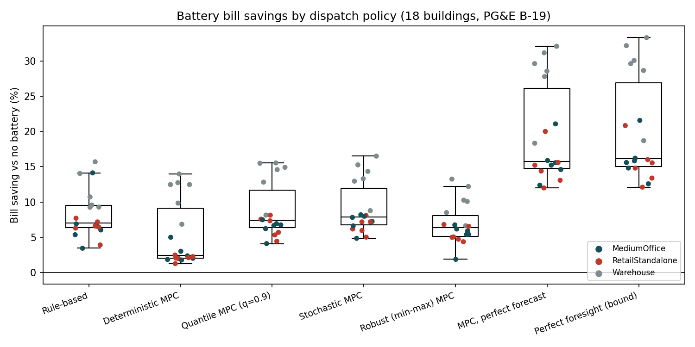
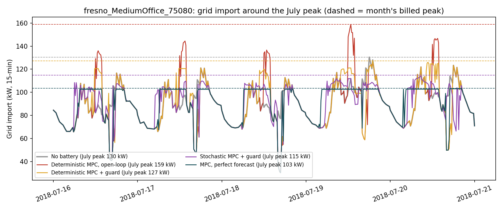
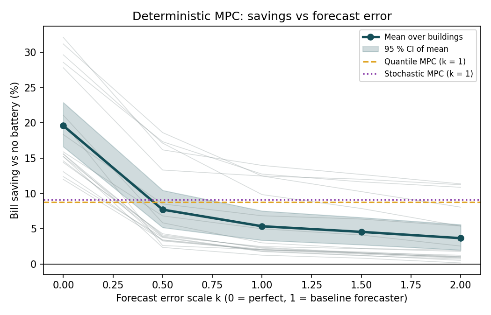
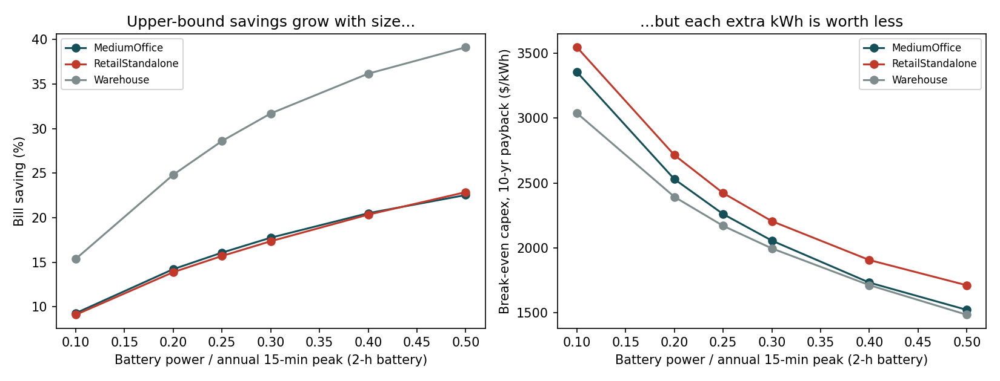
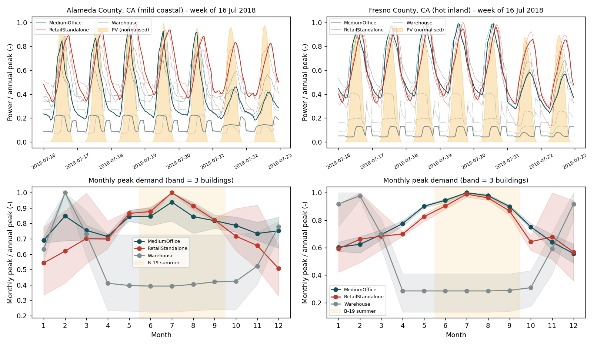

Behind-the-meter battery + PV for 18 simulated commercial buildings on PG&E's B-19 tariff, 15-minute resolution. A solver-agnostic MILP, rolling-horizon MPC with deterministic, quantile, stochastic and min-max variants, and 2.3 million solves of closed-loop simulation, all reproducible on free Colab CPUs.

Savings versus the same building with PV but no battery. With a perfect forecast MPC reaches 97.7 % of the bound, so the loss comes from forecast error, not from the optimiser or the 24-hour horizon.
| Policy | Mean saving | 95 % CI | Share of bound |
|---|---|---|---|
| Perfect foresight (bound) | 20.1 % | [17.0, 23.5] | 100 % |
| MPC, perfect forecast | 19.6 % | [16.6, 22.9] | 97.7 % |
| Stochastic MPC (10 scenarios) | 9.1 % | [7.5, 10.8] | 45.6 % |
| Quantile MPC (q = 0.9) | 8.8 % | [7.1, 10.6] | 45.3 % |
| Rule-based (energy-feasible threshold) | 8.3 % | [6.8, 9.9] | 42.1 % |
| Robust min-max MPC | 6.9 % | [5.7, 8.3] | 35.1 % |
| Deterministic MPC | 5.4 % | [3.4, 7.5] | 15.6 % |

Demand charges (49–67 % of the bill) are set by the month's highest 15-minute import. A deterministic MPC that under-forecasts charges into a peak that then cannot be undone. Executed open-loop it lost money in 11 of 18 buildings; a real-time demand guard adds 5–7 points to every policy.

Scaling the forecast error from 0 to 2× today's baseline. Value is highly non-linear: near today's accuracy a 10 % smaller error is worth only ~$174 per building per year, whereas handling uncertainty (stochastic or quantile MPC) recovers more than halving the error would.

Perfect-foresight upper bound for 2-hour batteries at 10–50 % of the annual peak. Ten-year break-even capex falls from $3,354 to $1,610 per kWh; with the realistic controller at 25 % it is about $1,035/kWh, before discounting, incentives and capacity fade.

NREL ComStock loads (3 buildings × 3 types × 2 climates, chosen by a fixed median rule), NSRDB weather and a pvlib PV model validated against PVGIS (annual yield within 3.7–5.2 %). The load time stamps turned out to be Eastern Standard Time, verified from the exterior-lighting switch-on versus the computed sunset in every month.